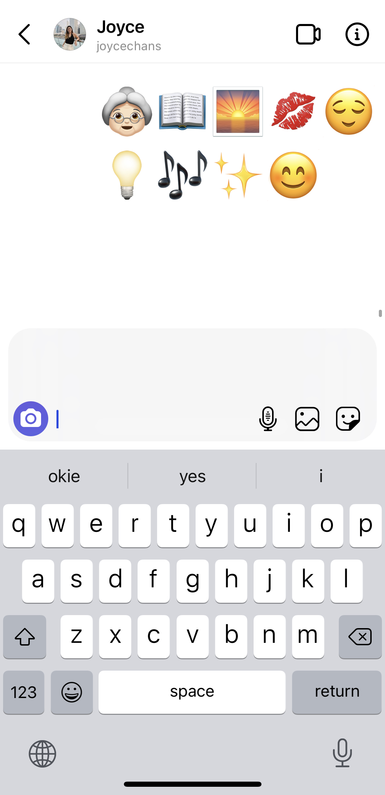
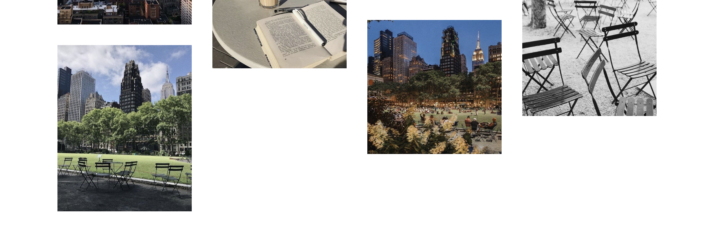
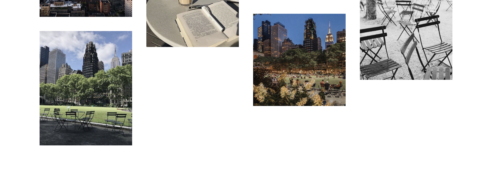

In this project, I experimented with publishing online without typing a single line of code on three different platforms. Through using unconventional ways to publish on these networks, I came to understand how information moves across these networks, how context is created by different tools and different communities and users.
I chose to publish the poem, Bryant Park at Dusk, by Geoffrey Brock on the platforms: Google Maps, Notion, and VSCO.
In my first draft, I explored Google Maps by placing different checkpoints throughout Bryant Park to take the viewers on an adventure as they go through the poem. (This is also shown in the final draft, shown below.) Another platform I tried was Instagram's direct messaging tool. I texted 25% of the poem into emojis. However, I didn't really like how I conveyed the message because it wasn't an effective use of the platform. The last idea I had for the draft was making a moodboard on Pinterest. Unfortunately, this didn't work very well because I couldn't have much control on the order or captions of each pin. There were pages such as "more like this" which made it messy and confusing for any viewer to understand the point of the Pinterest board. I later decided not to go through with Instagram and Pinterest.
Because the poem is based in Bryant Park and conveys his thoughts and feelings towards the atmosphere and observations when he's there, I thought it would be fitting to let users navigate through the digital map of Bryant Park as they read through the poem.
Notion is a productivity app. It is like a digital bullet journal with many features such as checklists, tables, different headings, callout quotes, and bullet points. In this platform, I experimented with all the feature the app provided to create an interesting composition.
VSCO is a photo editing app that let's you publish you photos on your profile after you edit them. I decided to make a visual mood board that emulates the poem. I found the photos on Pinterest, edited them using the presets on the VSCO app, and then posted them under the profile: ge0ffreybr0ck. I separated each poem into their own stanza and matched it with a fitting photo, keeping in mind the maximum word count for captions. The order of the photos starts from the most recent, top photo, and ends on the bottom of the page.
 
